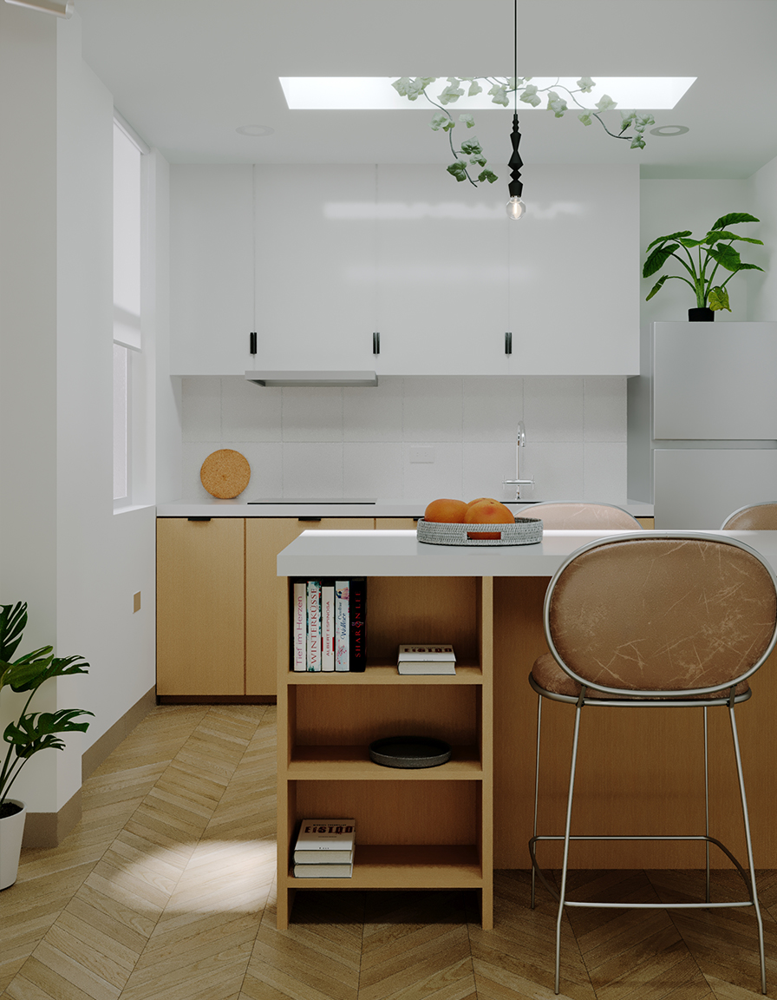
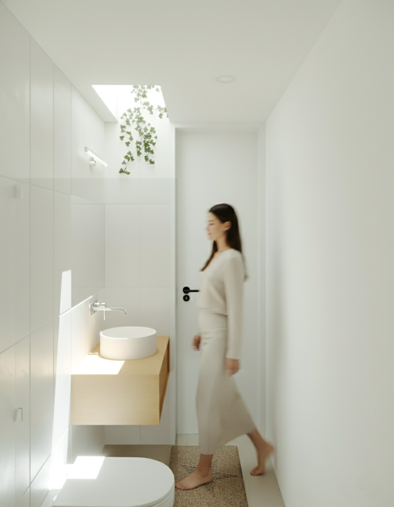

Departamento L+W
El proyecto Departamentos L+W corresponde al desarrollo de dos mini departamentos planteados como anteproyecto arquitectónico, la propuesta surge a partir de la necesidad de aprovechar un espacio libre existente en el cuarto nivel de una vivienda, sobre un primer nivel de aproximadamente 90 m², optimizando el área disponible mediante una solución funcional y eficiente..
El terreno presenta condiciones morfológicas restrictivas, al tratarse de un lote longitudinal con colindancias en ambos laterales y doble fachada frontal y posterior, situación que limita la correcta iluminación y ventilación natural de los ambientes. Frente a este contexto, el proyecto tiene como objetivo principal lograr una adecuada funcionalidad, confort y optimización del espacio, resolviendo dos unidades habitacionales independientes. Cada mini departamento se organiza con dos habitaciones, un baño completo y un área social integrada de sala, cocina y comedor bajo un concepto abierto, priorizando la iluminación y ventilación natural en todos los espacios, así como el uso de materiales de tonalidades claras que refuercen la percepción de amplitud y bienestar interior. La propuesta responde a un uso mixto personal y comercial, destinando una unidad para vivienda y la otra para alquiler, garantizando flexibilidad y valor funcional al conjunto.


